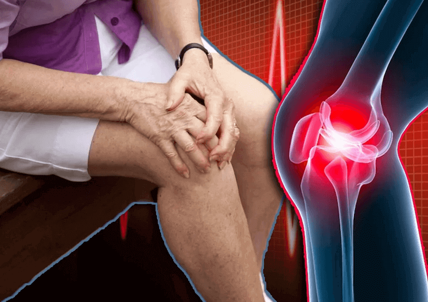
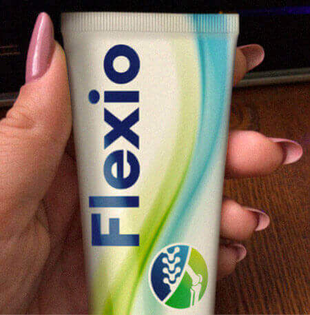
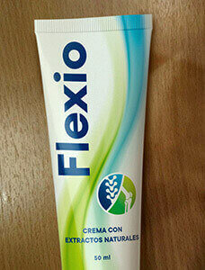

Artigo lido
por mais de 16.730 pessoas
por mais de 16.730 pessoas
Olá amigos! Eu quero compartilhar minha história com todos vocês. Minha mãe tem 70 anos e, ao contrário de muitas mulheres de sua idade, ela é feliz e quer aproveitar cada segundo de sua vida. No entanto, os anos tomam seu pedágio. Apesar de estar constantemente se movendo de um lugar para outro, um dia sua saúde a desapontou.
Minha mãe e eu moramos em cidades diferentes, portanto, nem sempre posso ajudá-lo a controlar seu bem-estar. Sem dúvida, ela é uma mulher independente. No entanto, tem uma personalidade um tanto ousada. Continue indo ao centro da cidade onde pessoas da sua idade se reúnem regularmente para dançar. A propósito, há alguns homens mais velhos que querem ser seus namorados, mas eles não têm muito sucesso com isso.
Mas não é o problema em questão. Uma tarde liguei para ela como de costume. Nós estávamos falando sobre diferentes tópicos quando percebi uma certa tristeza em sua voz. Perguntei a ele o que tinha acontecido mas a natureza teimosa de minha mãe a manteve em silêncio.
Fiquei perguntando a ele a semana toda até reunir meus familiares e ir para casa. Você sabe o que? Ela não estava saindo de casa todo esse tempo! Eu nem tive força suficiente para ir ao supermercado.
Quando chegamos à sua casa foi um feriado. Ela parecia deprimida porque não podia mais desfrutar de seu hobby - dançar. Acontece que ela queria ir ao centro da cidade para dançar do jeito que costumava fazer. Quando ele estava saindo do ônibus, ele fez um movimento estranho e torceu o pé.
Algumas freiras o ajudaram a voltar para casa. Claro, ela não ligou para a ambulância. Ele pensou que logo tudo ficaria bem de novo, mas o problema persistiu. Além disso, suas articulações começaram a doer. A alegria e o desejo de dançar desapareceram.
Meus filhos e eu a encorajamos da melhor maneira possível, mas foi difícil fazê-lo passar por tratamento. Meu marido a levou para o hospital, onde prescreveram várias pomadas e um aquecimento diário de suas articulações. Estamos felizes que ela tenha iniciado o tratamento. No entanto, logo percebemos que o caso era difícil. Nós tivemos que voltar para a nossa casa que estava em outra cidade mas quem ia levar minha mãe ao hospital todos os dias para que ela pudesse continuar o tratamento ?!
No início, tentamos encontrar um trabalhador idoso, mas minha mãe não estava disposta a entrar em contato com estranhos. Portanto, começamos a procurar opções alternativas on-line. Estamos à procura de um remédio que possa ajudá-lo a se livrar rapidamente da dor nas articulações e sem causar efeitos colaterais terríveis!
E nós encontramos! O bálsamo Flexio para dor nas articulações! É um produto completamente natural e o fabricante garante um resultado positivo.
Eu tive que fazer uma pequena pausa e ficar com minha mãe por uma semana. O bálsamo veio rapidamente e ela começou a usá-lo instantaneamente. Incrível! Logo após 2 dias de uso do bálsamo, a dor diminuiu e minha mãe andou livre e facilmente novamente.
Ele me disse para ir para casa, mas ele continuava me dizendo como se sentia ao telefone. Depois de um mês, ele se sentiu 20 anos mais jovem. Suas juntas pararam de ranger e doer. Não só ele poderia andar para o supermercado, mas ele também continuou a dançar e quebrar os corações de seus fãs idosos.
Agora minha mãe tem 71 anos e continua a aproveitar a vida todos os dias que passa. Valorize a vida e aproveite ao máximo. Os anciões vigorosos são loucos por ela e as mulheres mais velhas a invejam. Estou incrivelmente feliz por ter essa mãe! Ele é um modelo para mim. Acho que todos deveriam respeitar e cuidar de suas mães como fizeram com você! E, se eles têm dor nas articulações, deixar o problema nas mãos do Flexio. Aqui está um pequeno vídeo caseiro que mostra a minha mãe saudável e feliz dançando!
Comentários para a história:
Por favor, não use linguagem ofensiva e não anuncie. Obrigado!
Mariana
Eu também estou muito preocupado com a minha mãe. Sua mãe é incrível. Minha mãe é menos ativa e, às vezes, nem consegue ir ao supermercado devido a dores nas articulações. Eu quero comprar este bálsamo.
María Campos
Eles não vão acreditar, mas eu tive o mesmo problema com as minhas costas. Eu não tinha energia nem interesse na vida, perdi toda a esperança, mas de repente vi este gel ortopédico . É incrível, eu sugiro que todos experimentem.
Cristina
Uau, é bem ativo. Graças a Deus houve um final feliz. Minha mãe caiu enquanto caminhava pela rua e se deitou por meia hora. Era um dia de trabalho e a rua estava vazia. Ninguém poderia ajudá-lo. Ela conseguiu se levantar e mancou para casa: ((Cuidado ...
Sara Sifontes
Eu tenho usado este gel por seis meses. Ele curou minha artrite em duas semanas e meia, e agora eu sempre a tenho no meu kit de primeiros socorros para o caso.
Elena
Eu tenho dor nas articulações, para não mencionar minha mãe. Está na hora de fazer alguma coisa. Eu ouvi lá fora que a flexio ajuda bem.
Lorena
Eu levei minha mãe ao seu médico e lhe disse que a dor nas articulações na idade dela era normal. Ele prescreveu alguns medicamentos. Agora estou pensando se devo comprar este bálsamo ou não. Acho que deveria fazê-lo, já que parece orgânico, ao contrário das pílulas cheias de substâncias químicas.
Irene
Meninas, eu comprei este bálsamo para minha mãe. Ele tem usado por 3 semanas e diz que se sente melhor agora.
Victoria
Eu acho que mulheres dessa idade não deveriam dançar, porque pode ser perigoso. Eles têm que andar perto de suas casas e não ir longe demais! Esta é apenas a minha opinião.
Flexio
Livre-se da dor nas articulações
rapidamente e para sempre
Estatísticas do site
| Visitantes hoje: | 1521 pessoas |
| Visitantes do site: | 246 pessoas |
| Bálsamo comprado por: | 9856 pessoas |